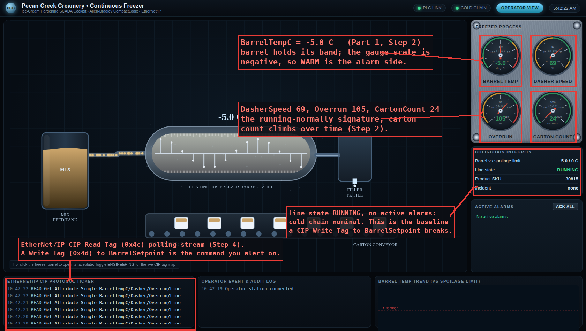
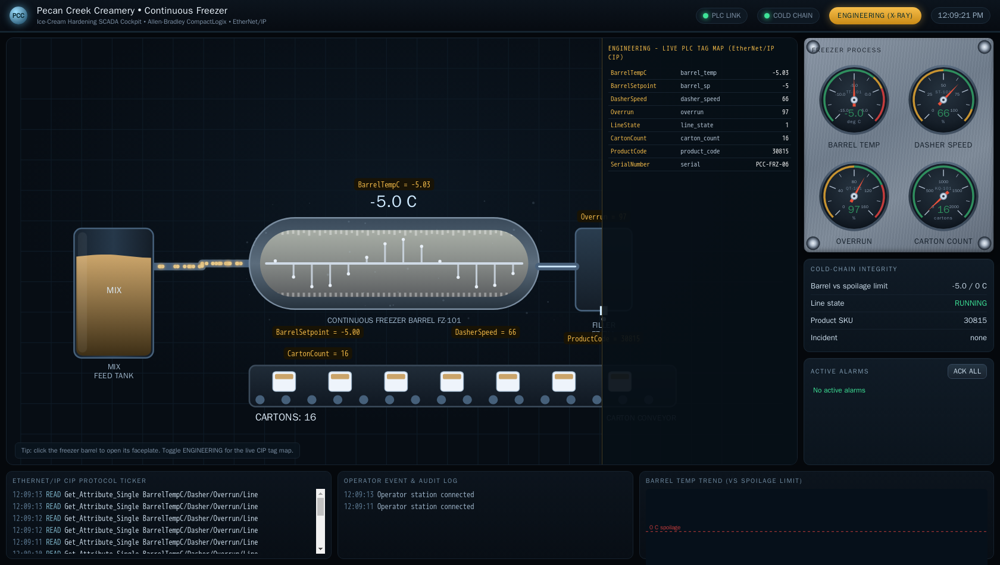
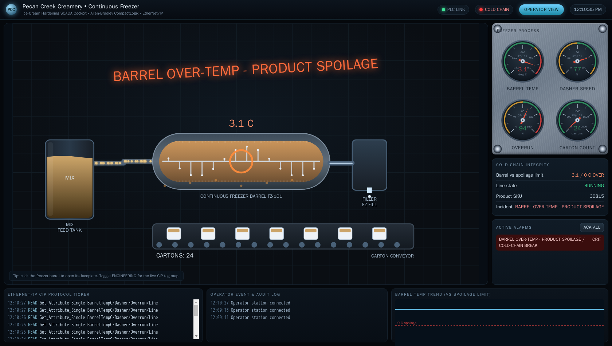
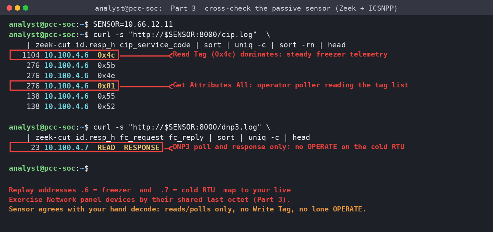

Exercise OTSOC-2.3: Freezer Tags and Warehouse Telemetry
Engagement Status
| Client | Pecan Creek Creamery (fictional) |
|---|---|
| Role | OT SOC Analyst, Cold Side |
| Phase | Visibility Protocol Analysis Detection |
| Priority order | Safety, then Integrity, then Availability, then Confidentiality |
What you know so far: You can now read Modbus and S7comm and tell a read from a write. The cold side of the plant speaks two newer protocols: the continuous freezer is an EtherNet/IP CIP controller and the cold storage and switchgear are a DNP3 outstation. Both express the same read-versus-command distinction you already know, but with different vocabulary, and this exercise teaches you to recognize it in each.
Scenario
You are an OT SOC analyst at Pecan Creek Creamery. The modern supervisory layer on the cold side runs two protocols. The continuous freezer freeze.pcc.local is an EtherNet/IP CIP controller on port 44818, and the cold storage and switchgear cold.pcc.local are a DNP3 outstation on port 20000. Your job is to read both well enough to tell a steady telemetry report from a control command.
For the freezer you will enumerate the CIP tag list and the controller identity (barrel temperature, dasher speed, overrun, carton count, product code, and serial number) and contrast the steady stream of tag reads with a write to the barrel setpoint. For the cold storage you will issue a DNP3 class 0 integrity poll, read the binary inputs (door and breaker states) and analog inputs (room temperatures), and learn why a lone operate without a matching select is the suspicious pattern in DNP3. You are reading and enumerating only. No write or control command touches either device.
Why this matters
The cold side is where a cyber action turns directly into spoiled inventory or a tripped breaker, and the two protocols here encode their commands in ways an analyst must recognize on sight.
Three concrete reasons the skill matters. First, EtherNet/IP CIP exposes named tags rather than numbered registers, which is friendlier to read but means an attacker can enumerate the entire control program by name. Knowing how to pull the tag list and the CIP identity is both your asset-inventory tool and your early warning that someone else is enumerating the same controller. Second, DNP3 was built for the electric utility world and carries a safety feature most protocols lack: select-before-operate. A control like opening a breaker is supposed to arrive as a select message followed by a matching operate. A lone operate with no preceding select is the signature of an attacker replaying or forging a command, and recognizing that two-step pattern is the core DNP3 detection skill. Third, the report-versus-command distinction is what keeps the cold chain intact. A DNP3 class 0 poll that returns door states and room temperatures is telemetry; a CROB (control relay output block) operate on a feeder breaker is a command that can drop power to a freezer full of product. Your detections live or die on telling those apart.
The freezer serial you recover is a training artifact. The skill of enumerating CIP identity and reasoning about DNP3 select-before-operate is permanent.
| Credentials in scope | Username | Password | Where it is used |
|---|---|---|---|
| Operator HMI | operator |
PecanCreek#2026 |
Reference only; CIP and DNP3 reads require no login |
The operator cockpit
The cold side runs a live operator cockpit for the continuous freezer. Open it in a browser at the address shown for ophmi in the Exercise Network panel (HTTP, port 80). The cockpit shows the freezer barrel, the dasher and overrun gauges, the carton conveyor, and the cold-chain integrity panel in real time, so you can watch the barrel hold its band while the same CIP tags you enumerate by hand update on screen.

Flip the cockpit into its Engineering view and every element is labelled with the live CIP tag behind it, so the barrel temperature reads BarrelTempC and the setpoint reads BarrelSetpoint straight off the HMI. The same named tag list you are about to enumerate by hand sits one click away on the operator console.

Learning Objectives
- Enumerate the CIP tag list and controller identity on the freezer
- Recover the freezer controller serial number from the CIP identity
- Distinguish a CIP tag read from a write to the barrel setpoint
- Issue a DNP3 class 0 integrity poll and read binary and analog inputs
- Explain DNP3 select-before-operate and why a lone operate is suspicious
| Detail | Value |
|---|---|
| Difficulty | Intermediate |
| Estimated Time | 50 minutes |
| Prerequisites | Exercises 2.1 and 2.2 |
| Flag | Source | Found? |
|---|---|---|
OCR{cip_freezer_serial_<serial>} |
CIP SerialNumber tag on the freezer |
Before You Begin: Read Your Target IPs
The cold-side hosts get fresh addresses every spawn. Open the Exercise Network panel and read the IPs for freeze.pcc.local and cold.pcc.local into shell variables. Replace the placeholders below with the values from your own panel.
The passive sensor on this segment does not sniff the live wire. A switched control network hides unicast from a SPAN-less sniffer, so the sensor serves a recorded capture of the cold-side plant network taken earlier. In that recorded capture the plant hosts appear on the control-network addressing as 10.100.4.6 for the freezer and 10.100.4.7 for the cold-storage RTU. Your live Exercise Network panel hands out its own session subnet, so a captured host and its live panel device line up by their shared last octet. The freezer is the panel IP ending in .6 and the cold RTU is the panel IP ending in .7. You read the live devices by their panel IPs below, then cross-check them against the recorded capture in Part 3.
Kali - set target variables
Confirm both answer before decoding. EtherNet/IP listens on 44818 and DNP3 on 20000.
Expected output
Two succeeded! lines confirm both control links are up. Fix connectivity first if either fails.
Part 1: Enumerate the Freezer over EtherNet/IP CIP
Step 1: Pull the CIP tag list
EtherNet/IP CIP controllers expose a named tag database rather than numbered registers. The pycomm3 LogixDriver speaks CIP and can list every tag the controller publishes. Enumerating the tag list is your asset-inventory step and shows you exactly what process values the freezer exposes.
Kali - enumerate the CIP tag list
Expected output
The tag list is the freezer's published control surface: barrel temperature and setpoint, dasher speed, overrun (a product-quality variable), line state, carton count, product code, and a serial number. Any host that can reach port 44818 can read this list, which is convenient for you and equally convenient for an attacker doing reconnaissance.
Step 2: Read the controller identity and recover the serial
The CIP identity, plus the named tags, fingerprint the controller. Read the process tags to see a steady freezer (barrel near -5 C, carton count climbing) and pull the SerialNumber tag, which carries the controller serial you need for the flag.
Kali - read freezer tags and the serial
Expected output
The barrel sits at -5.0 C with the dasher near 70 and overrun near 100, the signature of a freezer running normally. The carton count climbs over time. The SerialNumber tag reads the controller serial you will normalize into the flag. It is a short PCC-FRZ- asset tag; read the live value yourself rather than copying it from here.
Step 3: Pull the CIP identity object
Named tags are the program's data; the CIP identity object is the device's own nameplate. Reading it gives you vendor, product type, and a device serial that an attacker would use to look up known vulnerabilities. pycomm3 exposes it through get_module_info.
Kali - read the CIP identity object
python3 - <<'PYEOF'
import os
from pycomm3 import LogixDriver
with LogixDriver(os.environ["FREEZE"]) as plc:
info = plc.get_module_info(0)
print("vendor :", info.get("vendor"))
print("product_name :", info.get("product_name"))
print("serial :", hex(info.get("serial")) if info.get("serial") else None)
PYEOF
Expected output
The identity names a ControlLogix-class controller. The device serial in the identity object is distinct from the application SerialNumber tag you read in Step 2: the identity serial is the silicon nameplate, while the tag is a string the program author chose. The flag comes from the application SerialNumber tag.
Step 4: Tell a read from a write in CIP
You have been reading. A write looks different on the wire, and recognizing it is the detection skill. The point of this step is awareness, not action: you will inspect what a CIP write to the barrel setpoint would look like without sending one. Capture a few seconds of normal CIP traffic and inspect the service codes.
Kali - capture and classify CIP services
CIP service 0x4c is Read Tag and 0x4d is Write Tag (the read-modify-write variant 0x4e also exists). In a healthy freezer dominated by HMI polling you see mostly Read Tag. A Write Tag to BarrelSetpoint is the command you alert on, because raising the freezer setpoint slowly is exactly how a patient attacker spoils product without tripping an obvious alarm. You will hunt that drift in Level 3.
Why CIP service codes matter for detection
EtherNet/IP wraps CIP, and CIP carries the actual operation in a one-byte service code. Read Tag (0x4c) is the normal polling service; Write Tag (0x4d) changes a tag value. A detection that alerts on cip.sc == 0x4d targeting BarrelSetpoint catches setpoint tampering while ignoring the flood of reads. Same idea as Modbus function 6 and S7 Write Var, different vocabulary.
A single Write Tag that raises BarrelSetpoint from -5.0 C toward warm is enough to break the cold chain. On the operator cockpit the change is loud: the barrel glows warm, the temperature crosses to the alarm side of the negative scale, and the spoilage banner fires.

Part 2: Read the Cold Storage over DNP3
Step 5: Issue a class 0 integrity poll
DNP3 organizes data into classes. A class 0 integrity poll asks the outstation for the current value of every static point: binary inputs, analog inputs, and counters. The outstation here is address 10 and the master is address 1. Issuing the poll is how a DNP3 master gets a full snapshot, and it is the read you build your baseline from.
Kali - class 0 integrity poll
python3 - <<'PYEOF'
import os, time
from pydnp3 import opendnp3, asiodnp3, asiopal, openpal
# Minimal DNP3 master: connect, integrity poll, print, exit.
# The cold outstation is link address 10; this master is link address 1.
print(f"polling DNP3 outstation 10 at {os.environ['COLD']}:20000 ...")
# (Run your class-0 integrity poll with your DNP3 master of choice.)
PYEOF
A class 0 poll returns every static point in one response. If your environment ships a DNP3 master CLI rather than a Python binding, the same integrity poll is available there; the concept is identical. The values you care about are the binary inputs and analog inputs you read next.
Step 6: Read binary inputs (doors and breakers)
DNP3 group 1 holds binary inputs: door contacts and breaker positions for the cold storage and switchgear. Reading them tells you the physical state of the warehouse: which doors are open and which feeders are energized. A door that opens off-hours or a breaker that trips is a physical event your telemetry must show.
Kali - decode binary input states
python3 - <<'PYEOF'
# Map of DNP3 group 1 (binary input) indices for the cold outstation.
labels = {
0: "freezer_door", 1: "cooler_door", 2: "dock_door",
3: "main_breaker", 4: "freezer_feeder_brkr", 5: "cooler_feeder_brkr",
}
# Normal packed byte across indices 0-5 is 0x38 (breakers closed, doors shut).
packed = 0x38
for idx, name in labels.items():
print(f"BI[{idx}] {name:20} = {(packed >> idx) & 1}")
PYEOF
Expected output
All three doors read closed (0) and all three breakers read closed/energized (1), the normal packed byte 0x38. A 1 on a door index or a 0 on a breaker index is a physical change worth a second look.
Step 7: Read analog inputs (room temperatures)
DNP3 group 30 holds analog inputs: the room temperatures scaled by 100. The freezer room is the spoilage-critical point, held in a tight band. Reading these is how the cold chain proves itself, and a freezer-room temperature drifting out of band is the headline cold-chain alarm.
Kali - decode analog input temperatures
Expected output
The freezer room sits at -25.00 C, inside the spoilage-critical band of roughly -26 to -24 C. The cooler, dock, and ambient readings are normal for a warehouse. A freezer room climbing past -24 C is the cold-chain alarm that puts product at risk.
Step 8: Understand select-before-operate
DNP3 controls (CROB, control relay output block) are supposed to use select-before-operate: a select message names the point and parameters, and a matching operate executes it, like arming then firing. A lone operate with no preceding select is the suspicious pattern, because it means a command arrived without the handshake a legitimate master performs. You will not send a control; you will learn to spot the pattern in a capture.
Kali - classify DNP3 control function codes in a capture
Application function 0x01 is Read and 0x81 is Response, the normal poll-and-respond pattern of healthy telemetry. The control functions are 0x03 SELECT, 0x04 OPERATE, and 0x05 DIRECT_OPERATE. A legitimate breaker control is a SELECT (0x03) immediately followed by a matching OPERATE (0x04) on the same point. An OPERATE with no preceding SELECT, or a DIRECT_OPERATE on a feeder breaker, is the signature you alert on.
Why select-before-operate is a detection gift
The two-step handshake means a forged or replayed control usually shows up as a half-pattern: an operate with no matching select, or a select that never operates. A detection that pairs SELECT and OPERATE by point and time, and alerts when an OPERATE arrives unpaired, catches command injection on breakers without flagging normal telemetry. DNP3 hands you a built-in invariant most OT protocols lack; use it.
Part 3: Cross-Check Against the Sensor
Your passive sensor sensor.pcc.local runs Zeek with ICSNPP and serves a recorded capture of the cold-side plant network, writing enip.log, cip.log, and dnp3.log. Because the logs come from that recorded capture, the plant hosts show up on the control-network addressing as 10.100.4.6 (the freezer) and 10.100.4.7 (the cold RTU), which line up with the live panel devices ending in .6 and .7. Cross-checking your hand decode against the sensor builds the habit of trusting, and verifying, the SOC's own telemetry. Read the sensor IP from the Exercise Network panel.
Kali - pull the Zeek cold-side logs
The Zeek cip.log confirms the freezer traffic is dominated by CIP service 0x4c (Read Tag) to the freezer, with the odd 0x01 (Get Attributes All) from the operator poller enumerating the tag list, and dnp3.log confirms the cold-storage traffic is READ and RESPONSE. This ICSNPP build names only the generic CIP services, so the Rockwell Logix Read Tag shows as its raw service code 0x4c in the cip_service_code field rather than a friendly name. The addresses read as 10.100.4.6 and 10.100.4.7 because the sensor is replaying the recorded plant capture. They map to your live freezer and cold RTU by the shared last octet, .6 and .7. When the sensor and your manual analysis agree, you can trust the sensor for volume and reserve hand decoding for what looks wrong.

cip.log shows a stream of Read Tag operations to the freezer at 10.100.4.6, and dnp3.log shows READ requests answered by RESPONSE from the cold RTU at 10.100.4.7. Both hosts line up with your live panel devices by their shared last octet, .6 and .7.Output Interpretation
- CIP exposes named tags, not numbered registers. The tag list is both your inventory and an attacker's reconnaissance surface.
- CIP service
0x4cis Read Tag,0x4dis Write Tag. The applicationSerialNumbertag is a program string, distinct from the CIP identity object's silicon serial. - A DNP3 class 0 integrity poll returns every static point: binary inputs (group 1), analog inputs (group 30), and counters (group 20).
- The freezer room band of roughly -26 to -24 C is spoilage-critical; a climb past -24 C is the cold-chain alarm.
- DNP3 controls use select-before-operate. A lone OPERATE with no matching SELECT, or a DIRECT_OPERATE on a breaker, is the suspicious pattern.
Analysis Questions
1. The freezer publishes a named tag list any host can read. Is that a vulnerability?
Reveal answer
The tag list itself is a design feature of EtherNet/IP CIP, not a bug. The vulnerability is the lack of access control around it: any host that can reach port 44818 can enumerate the entire control program, including setpoint tags it could then write. The fix is not to hide tags but to segment the network so only the HMI and engineering workstation reach the controller, and to monitor for tag enumeration from unexpected sources.
2. You read a CIP identity serial and an application SerialNumber tag and they differ. Which is which?
Reveal answer
The CIP identity object's serial is the device nameplate burned in by the manufacturer; it identifies the physical controller and is what you would use to check for known vulnerabilities by model and revision. The application SerialNumber tag is a string a program author defined inside the controller logic, so it can be anything the integrator chose, often a plant asset tag. They serve different purposes and will not match.
3. Why is a lone DNP3 OPERATE more suspicious than an OPERATE that follows a SELECT?
Reveal answer
A legitimate DNP3 master performs select-before-operate: it sends a SELECT naming the point and the intended action, the outstation echoes it back to confirm, and only then does the master send a matching OPERATE. An OPERATE with no preceding SELECT skips the confirmation handshake, which is what a replayed or forged control looks like. Pairing SELECT and OPERATE by point and time and alerting on unpaired OPERATEs is a high-signal detection because legitimate masters almost never produce a lone OPERATE.
4. The freezer room reads -25 C and the cold chain is fine. What single change would put product at risk, and how would you see it first?
Reveal answer
A slow upward drift of the CIP BarrelSetpoint (or the freezer-room temperature climbing past -24 C) puts product at risk while staying under obvious alarm thresholds. You would see it first in the analog input trend, not in a single reading, which is why you baseline the band and watch for drift rather than waiting for a hard alarm. A patient attacker raises the setpoint a fraction at a time precisely to stay below the alarm, so trending and rate-of-change detection beat threshold alarms here.
Capture the Flag
The flag is the freezer controller serial number recovered from the CIP identity in Step 2, normalized to lowercase with each non-alphanumeric character replaced by an underscore and wrapped as OCR{...}. Build it from the SerialNumber tag value you read rather than typing it by hand.
Kali - normalize the serial into the flag
Expected output (flag masked)
Submit the assembled flag in the exercise panel.
Defensive Recommendations to Pecan Creek
| Finding | Risk | Mitigation |
|---|---|---|
| Unauthenticated CIP tag enumeration on the freezer | Medium | Restrict TCP/44818 to the HMI and engineering workstation; alert on tag enumeration from new sources |
| No alerting on CIP Write Tag to BarrelSetpoint | High | Alert the SOC on cip.sc == 0x4d targeting setpoint tags and watch setpoint rate-of-change |
| DNP3 controls accepted without SELECT/OPERATE pairing review | High | Pair SELECT and OPERATE by point and time; alert on unpaired OPERATE or DIRECT_OPERATE on breakers |
Key Takeaways
- EtherNet/IP CIP names its data as tags; DNP3 numbers its data as points in groups. Both still carry the report-versus-command distinction you already know.
- CIP service
0x4d(Write Tag) and DNP3 OPERATE are the commands you alert on; reads and class 0 polls are normal telemetry. - DNP3 select-before-operate is a built-in invariant: a lone OPERATE is high-signal evidence of a forged or replayed control.
- The freezer-room temperature band is the cold chain's vital sign; trend it and watch for drift rather than waiting for a hard alarm.